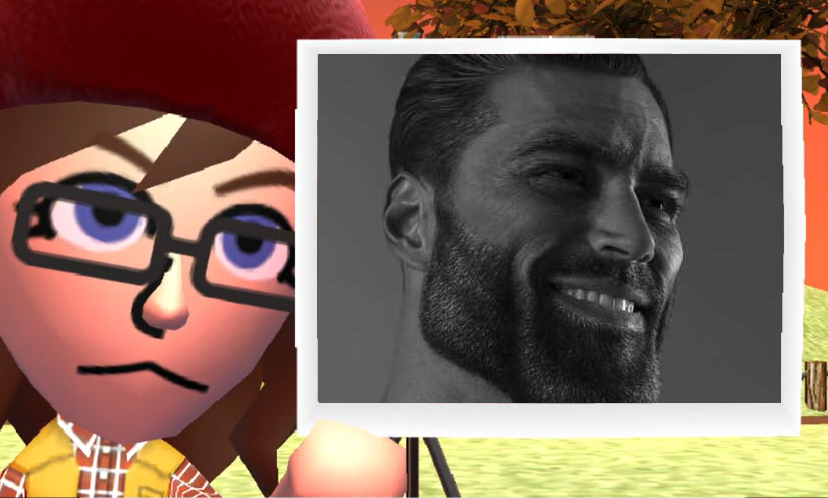
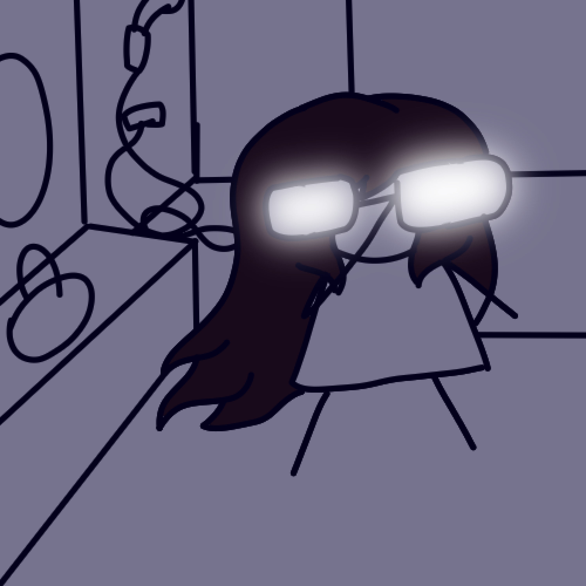

Très bien alors je me présente je suis Lily Alias Mana pour les intimes je m'essaie à la programmation et je l'apprends en classe et aujourd'hui j'ai voulu faire un simple site internet.
J'ai actuellement 19 ans et le métier que je voudrais faire plus tard est programmeuse car j'ai toujours été fascinée par ce que les programmeurs pouvaient faire C'est un peu pour ça que j'ai décidé de faire de la programmation
Mes principaux intérêts sont les jeux vidéos, le dessin et les animés.
Je ne me qualifierais pas de personne excéssivement sérieuse mais j'essaie au moins donc ça c'est bien non ?
Ah aussi je suis une grande amatrice de memes
Je dessine parfois. Certes ça n'est pas ma spécialité mais je pense qu'avec que j'en aurais besoin pour faire des jeux moi même non ?
Je crois que c'est tout pour la présentation donc si vous voulez revenir au menu principal bah il faudra cliquer si le petit lien en dessous.